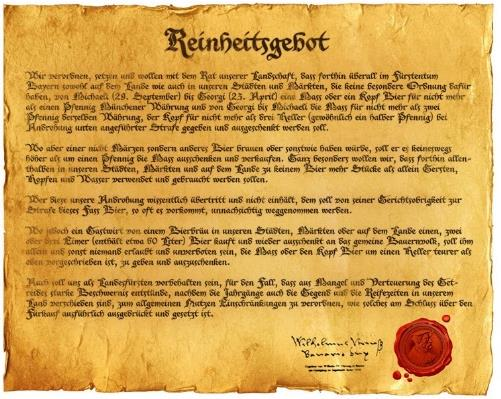
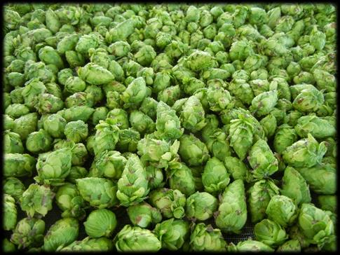
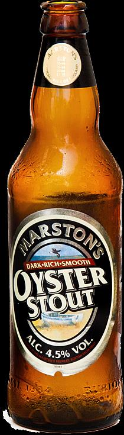
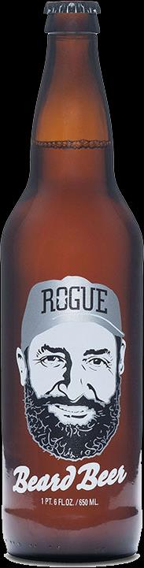
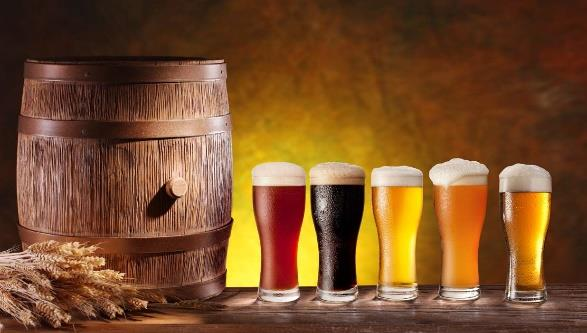

By Ephrayim Baskin | Sukkos 5777 — October 2016
Craft beers are beers produced in small breweries. The Kosher Australia Food Guide insists that not all craft beers are kosher, contrary to the beer (bare) necessities of some. This article will explain why. Before looking at the potential kosher concerns in beer, let’s hop into the art of brewing and have a quick and wort- while mash course into how beer is made[1].
Traditionally, there have only been four ingredients in beer: Water, barley, hops and yeast. In fact, one of the first consumer food protection laws was regarding beer. In 1516, the ‘German Beer Purity Law’, the Reinheitsgebot, was introduced by the Bavarian co- rulers, Duke Wilhelm IV and Duke Ludwig X. Interestingly, one of the catalysts for this law was to keep cheap and unhealthy ingredients out of beer, such as roots, mushrooms and animal products[2]. Although the Reinheitsgebot restricted beer ingredients to only three ingredients – water, barley and hops – this was so because the existence of yeast had yet to be discovered. Nonetheless, yeast was unknowingly added, either via adding sediments from previous productions, or from the air in the open vats fermentations. The Reinheitsgebot was eventually overruled 471 years later in 1987 when the European court considered its narrow ingredient restriction to be a restraint of free trade.

In Australia and New Zealand, the restriction on calling a product ‘beer’ is more inclusive, allowing other cereals, sugar, salt, herbs and spices
[3]. However, in practice, beer and ‘like-beer
[4]’ manufacturers add a multitude of other ingredients and processing aids
[5], some of which are subject to kosher concerns. Furthermore, the same equipment can be used to process different kinds of beer, and the non-kosher concerns of some beers can affect the kosher status of other beers processed on the same lines.
There are two stages in beer manufacturing. The first step is making malt grain at a Malthouse (or Maltings) and the second step is brewing the beer at a Brewery. Additionally, the yeast and hops are often prepared at different facilities. Although some Carlton supporters may strongly disagree, there are much less issues with a Malthouse than a Brewery.
MALTHOUSE Beer is made primarily from barley (although other grains known as adjuncts can be added). The carbohydrates in the barley first need to be broken down to simple sugars for fermentation to work.
This process naturally occurs when a barley seed is planted in the ground, where the carbohydrates are broken down into simple sugars that help the barley germinate and grow. In the Malthouse, barley undergoes a similar process to become malted barley. The barley is soaked, which causes it to germinate, with little rootlets appearing. Sometimes, gibberellic acid (a hormone that hastens the germination of the seed) and enzymes are added to help with this process. The grain is then kilned to stop the germination. It can be further roasted to produce darker malts such as black barley used in stouts.
From a kosher perspective, there are only a few minor concerns: If enzymes are added, they need to be kosher approved. Similarly, the gibberellic acid is often carried in an ethanol, which can be grape or dairy derived.
HOPS AND YEAST Besides malt, the other major ingredients of beer are water, hops and yeast. Most readers are familiar with water (although there is significant treatment of the water to ensure beer quality), but where do hops and yeast come from?
Hops are the flowers of the hop plant, and have been used for over 1000 years in beer production. In fact, the Talmud already mentions the use of hops in beer
[6]. They provide bitterness, antibacterial properties as well as floral, resin, spice and fruity flavours to the beer
[7]. The hop flowers are harvested, cleaned and dried. They are then either sold as dried flowers, crushed into a pellet or extracted with hypercritical carbon- dioxide to make a hop extract, all of which do not have any kosher concerns.

Brewing yeast, technically known as Saccharomyces Cerevisiae, is a species of yeast responsible for producing the carbon-dioxide in baked goods and alcohol in alcoholic drinks. Different Hops strains of the yeast produce different flavours and grow best under different conditions (e.g. the difference between an ale and a lager yeast). These yeasts, which have been isolated over the years, are grown on media, after which they are dried and sent to the breweries. The kosher status of the yeast is dependent on the media upon which it was grown. Kosher certified beer will ensure that the growth media is kosher, to avoid any kosher concerns.
BREWERY At the brewery, the above- mentioned ingredients are processed together to make beer. The operations at the brewery can be split into three areas: The brewhouse, fermentation and filtering.
The function of the brewhouse is to create from the malt a fermentable solution[8] called wort (pronounced wert) to which the yeast can be added. Basically, the malt is ground and cooked at high temperatures to extract the malt sugars. Hops and other adjuncts can then be added to prepare the wort for fermentation[9].
Fermentation takes place in the fermenter. The wort is ‘pitched’ with yeast and left to ferment for a specific amount of time, during which the sugars turn into alcohol. At the end of fermentation, the beer is cooled and the yeast drops to the bottom of the fermenter. (By now, the yeast is more than three times larger than it was when put in.) Some of the yeast is saved for the next batch. The rest is sold to produce other products such as vegemite.

Finally, the beer is filtered to remove particles and any remaining yeast, so as to eliminate any haze and produce a bright beer. Filtering agents, such as isinglass[10], as well as filtering aids are added. The beer is chilled to -2°C, chill-proofing enzymes can be added, after which the beer is filtered and either bottled, canned or kegged. Thereafter, the packaged beer is sent through a tunnel where hot water is sprayed to pasteurise the beer.
KOSHER CONCERNS Beyond the standard ingredients (yeast, hops, water and malt), some other ingredients can be used in mainstream beer. However, where the issues really start is in the weird and whacky craft brewery scene, where nothing is really out of bounds. In fact, if you Google “weirdest beer ingredients”, you will find beers that contain pizza
[11], oysters
[12], squid ink
[13] and – believe it or not – bull’s testicles
[14]. Some brewers age their beer in wine barrels
[15] – now we can have the kosher scotch debate over a beer. One beer even had yeast extracted from one of their brewer’s beard
[16] – although this probably would not create any kosher concerns.
This phenomenon is not only limited to the wild tongues of the USA. Here in Australia, such trends have already begun. In fact, one of the beers being showcased at this year’s Melbourne GABS beer festival is brewed with ambergris (produced in the intestines of sperm whales)[17]!
One should not think that these weird beers are isolated cases. There are dozens of milk stouts (aka sweet stouts or cream stouts) available, in which lactose is used as an adjunct.

According to the food standards of Australia and New Zealand (1.2.4), in line with international law, alcoholic drinks are not required to divulge their ingredients. However, this is only limited to standard beer ingredients, as well as some of the processing aids, most of which do not pose significant kosher concerns. The unusual ingredients above would most likely be listed on the label. If so, what could possibly be the issue with drinking craft beer that does not list anything other than traditional ingredients? The answer is – the processing equipment.
As described earlier, a lot of the brewing process takes place under high heat. Even when the beer is cooled, it can remain in a vat for longer than 24 hours. The significance of this is that the non- kosher status of the beer can transfer into the equipment, and when the brewer makes otherwise kosher beer on the same equipment, it too will become non-kosher. This issue is not limited to brands that make beers with weird ingredients, but even to brands that make only traditional beers. This is because a lot of breweries, especially micro and craft breweries, will brew not only their own branded beer, but also the beer of a multitude of clients. If even one of those clients uses non-kosher ingredients, it can call into question the status of all the beer manufactured in that facility. This is why uncertified beer from larger breweries tend to be less of an issue, as these facilities make so much beer they don’t have time to dabble with unusual beer, nor do they have time to brew for other brands.
However, there are some mitigating factors when considering the kosher status of beer that has gone through a facility that uses non-kosher ingredients. First of all, even if some of the unusual ingredients are not kosher, they might be bottul (less than 1.6% of the product), in which case the equipment will be okay for kosher beer manufacture after a standard wash. Secondly, there is room for leniency if the equipment hasn’t been used for 24 hours after the production of the non- kosher ingredient. A product manufactured on such a line can be considered kosher after the fact even if the equipment was not koshered, as any lingering taste in the equipment is considered to have become ‘pogem’, or tainted. However, this leniency cannot be relied upon in the first instance. Third, if the company has a hot detergent or caustic wash, one could argue that this has the same effect as leaving the equipment unused for 24 hours. However, relying on such a policy is debatable. Lastly, the normal wash systems of the company can sometimes be considered as a koshering if the temperatures are high enough. However, this would need to be investigated separately at each facility[18].
Based on these issues, there are different policies around the world for craft beer. All agree that the beer is not kosher if there is an obviously non- kosher ingredient on the label. However, beer from a non-mainstream brewery that seemingly uses only standard beer ingredients is subject to a range of recommendations. Some aren’t concerned about such beer at all, whereas others don’t recommend anything from a craft brewery, microbrewery, pub brewery or similar[19]. Based on local experience and in line with other international Hechsherim, Kosher Australia recommends that all craft and micro- brewed beer be investigated[20].
If there is a particular craft beer that you want to try, contact Kosher Australia who will endeavour to get in touch with that particular brewer and see if there are any kosher concerns. However, if you want to enjoy the best kosher beer, there is a large selection (it’s getting bitter all the time!) of certified beer in our kosher food guide.
I’d like to conclude by wishing all of you a happy new beer. I hope you enjoy all the kosher malternatives in your pursuit for hoppiness (famous last worts)!

[1] For those who dabble in bilingual puns, we will give a Biur on beer.
[2] German Beer Institute. (2008). The German “Beer Purity Law” (Reinheitsgebot) De- Mystified. Retrieved 29/8/16 from http://www.germanbeerinstitute.com/beginners.html
[3] FSANZ. (2016) Alcoholic beverages, beer. Standard 2.7.2.
[4] Technically any beer that has other ingredients that are not listed in standard 2.7.2 cannot be sold as ‘beer’ (FSANZ 2.7.2 (3)).
[5] Processing aids are substances that perform a technical purpose in the processing of the food, but not in the food itself (FSANZ 1.3.3). These don’t need to be declared on food labels. In beer production, this can include anti-foam, clarifiers, filtering aids and enzymes. A complete list of hundreds of permitted processing aids in general food manufacture (dozens of which are potentially non-kosher) can be retrieved from FSANZ, Schedule 18. http://www.foodstandards.gov.au/code/Pages/default.aspx
[6] Moed Katan 12b. כשותא is translated by Rashi as הומלו"ן which the Mtargem translates as hopfen, hops. The Talmud also notes its preservative and antiseptic properties (Avodah Zara 31b). See Rabbi Zushe Blech (2008). The story of wine, beer and alcohol. Kosher Food Production, 2nd ed.
[7] HPA. (2016). Hop Flavour Spectrum. Retrieved 12/9/2016 from http://www.hops.com.au/hop-flavour-spectrum
[8] So technically speaking, beer is a solution!
[9] In greater detail – there are essentially five stages:
a. Milling – malt is ground into a grist
b. Mashing (extraction) – occurs in the mash tun (mash tank). The grist is mixed with hot water, and the natural (or added enzymes) further break down the carbohydrates into sugars. At this point, enzymes and mash adjuncts (other cheaper carbohydrates such as rice, wheat, unmalted barley, maize, sorghum etc) can be added. The mashing occurs at 63-67°C.
c. Draining (lautering) – the mash is transferred to the lauter tun (draining tank), where the wort is filtered and then sprayed (sparged) with water (74-48°C) to decrease the sugar levels.
d. Boiling – the wort from the lauter tun is transferred to the kettle. Here hops are added, and sometimes also liquid adjuncts (glucose, sugar syrups etc). (Unhopped wort can also be concentrated at this point and used in products such as Milo, breakfast cereals etc).
e. Cooling – the wort is chilled and sent to the fermenter.
[10] Isinglass is a kind of gelatin extracted from fish, especially the non-kosher sturgeon. The Noda b’Yehuda discusses this (MK YD 26) and approves it, as the isinglass is only added at below bittul levels and is subsequently removed. It is therefore not considered intentionally nullifying an issur. Similar processing is sometimes used with apple juice; some kosher agencies won’t mark such juices as mehadrin.
[11] Mamma Mia! Pizza Beer. Retrieved 5/9/2016 from http://www.mammamiapizzabeer.com/main.php [12] The Porterhouse Brewing Co. Dublin. Oyster Stout. Retrieved 5/9/2016 from http://www.theporterhouse.ie/beers-oyster.php [13] All about Beer. Testing beer limits with squid ink. Retrieved 6/9/2016 from http://allaboutbeer.com/squid-ink-beers/ [14] Wynkoop Brewing Co. Rocky Mountain oyster stout. Retrieved 5/9/2016 from http://www.wynkoop.com/brewery/current-brews/. This brewer also made beers aged in wine casks, milk stouts and a range of other beers with odd kosher concerns.
[15] Dockstreetbeer, Dock Street Beer Ain’t Nothing to Funk with. Retrieved 6/9/2016 from http://www.dockstreetbeer.com/beer-archive
[16] Rogue. Beard Beer. Retrieved 5/9/2016 from http://buy.rogue.com/brands/Beard.html
[17] Moby Dick Ambergris Ale – GABS festival beer 2016. Retrieved 12/9/2016 from https://robetownbrewery.com/products/moby-dick-ambergris-ale-gabs-festival-beer- 2016%E2%99%A0/
[18] Rabbi Akiva Niehaus. (2013). Beer – Not what it used to be. Purim 2013. Retrieved 8/24/2016 from http://www.crcweb.org/kosher_articles/Beer.php
[19] The Chicago rabbinical council requires any beer made at ‘microbreweries, pub breweries and craft breweries’ to be kosher certified (http://www.crcweb.org/LiquorList.pdf). The Star-K has a similar policy, but only warns against ‘pub and home breweries’ (http://www.star- k.org/resource/list/PCW0Z0DO/Beer,_Liquor_and_Liqueur). The KANSW writes that ‘independent boutique breweries’ should not be assumed to be kosher (http://www.ka.org.au/index.php/component/option,com_kosherdb/Itemid,102/catid,109/su bcatid,239/), whereas the KLBD approves any unflavoured beer (http://isitkosher.uk/#beer).
[20] Besides the issues discussed in this article, other kosher beer-related issues include Jewish ownership over Pesach, agricultural halachos pertaining to Eretz Yisroel as well as those who are careful about consuming yoshon. Furthermore, there are other restriction where and when beer can be consumed; see chapter 114 in Shulchan Aruch, YD.
Originally published in Young Yeshivah Magazine. Republished with permission.